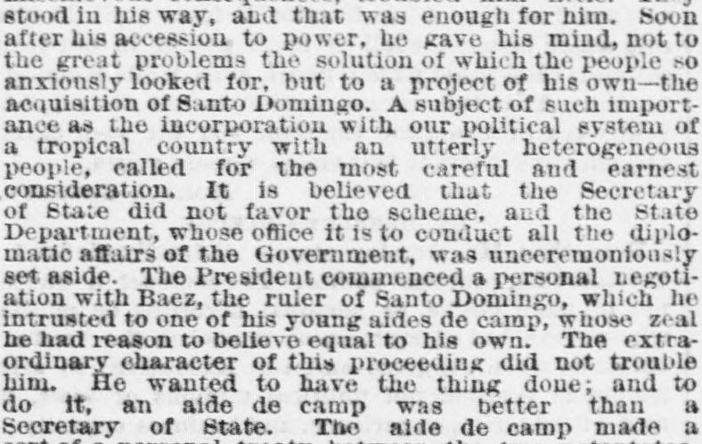
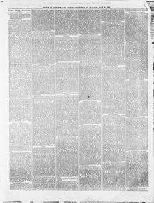

Ation with Baez, the ruler of Santo Domingo, which he intrustedación con Baez, el gobernante de Santo Domingo, que él confió
Rock Island Argus. Rock Island, Ill., July 26, 1872. Page 5. View the originalVer el original


See the full pageVer la página completaThe newspaper reported that President Grant bypassed his Secretary of State to negotiate a personal treaty regarding Santo Domingo through an aide-de-camp, pledging to lobby Congress to favor the scheme. Furthermore, the report claimed that Grant acted as a lobbyist to fulfill this agreement and ordered the United States Navy to attack anyone threatening the rule of the Dominican ruler, Baez.El diario denunció que el presidente Grant desairó a su secretario de Estado para concertar privadamente un tratado sobre Santo Domingo valiéndose de un edecán, obligándose a cabildear ante el Congreso a favor del proyecto. El texto añadía que Grant operó como un gestor de antesala para cumplir dicho compromiso y dio órdenes a la armada de los Estados Unidos de atacar a cualquiera que amenazase la permanencia en el poder del mandatario dominicano, Báez.
FULL TEXT:TEXTO COMPLETO:
Soon after his accession to power, he gave his mind, not to the great problems the solution of which the people so anxiously looked for, but to a project of his own—the acquisition of Santo Domingo. A subject of such importance as the incorporation with our political system of a tropical country with an utterly heterogeneous people, called for the most careful and earnest consideration. It is believed that the Secretary of State did not favor the scheme, and the State Department, whose office it is to conduct all the diplomatic affairs of the Government, was unceremoniously set aside. The President commenced a personal negotiation with Baez, the ruler of Santo Domingo, which he intrusted to one of his young aides de camp, whose zeal he had reason to believe equal to his own. The extraordinary character of this proceeding did not trouble him. He wanted to have the thing done; and to do it, an aide de camp was better than a Secretary of State. The aide de camp made a sort of a personal treaty between the two potentates, in which the President was pledged to propitiate the favor of Congress for the scheme of the lobby influence. This disgraceful engagement would have revolted the sensibilities of any President having the dignity of his high office and the honor of the nation at heart.Poco después de su acceso al poder, dedicó su mente, no a los grandes problemas cuya solución el pueblo esperaba tan ansiosamente, sino a un proyecto suyo propio—la adquisición de Santo Domingo. Un tema de tal importancia como la incorporación a nuestro sistema político de un país tropical con un pueblo totalmente heterogéneo, demandaba la consideración más cuidadosa y seria. Se cree que el Secretario de Estado no favorecía el plan, y el Departamento de Estado, cuya oficina es conducir todos los asuntos diplomáticos del Gobierno, fue dejado de lado sin ceremonia. El Presidente comenzó una negociación personal con Báez, el gobernante de Santo Domingo, que confió a uno de sus jóvenes ayudantes de campo, cuyo celo tenía razón de creer igual al suyo. El carácter extraordinario de este procedimiento no lo perturbó. Quería que la cosa se hiciera; y para hacerla, un ayudante de campo era mejor que un Secretario de Estado. El ayudante de campo hizo una especie de tratado personal entre los dos potentados, en el cual el Presidente se comprometió a proponer al favor del Congreso el plan del cabildeo de inmediato. Este vergonzoso compromiso habría revuelto las sensibilidades de cualquier Presidente que tuviera en el corazón la dignidad de su alto oficio y el honor de la nación.